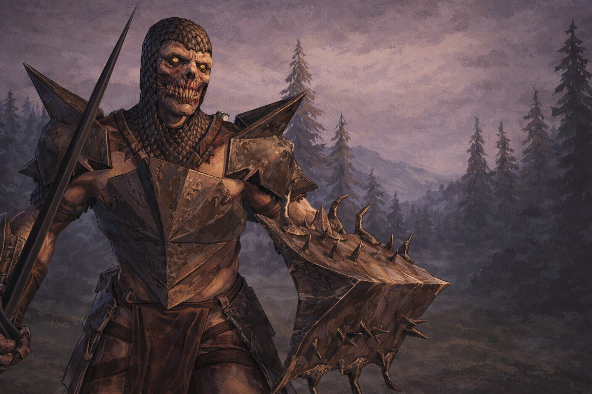

Гарлоки выше ростом, чем их собратья генлоки, ― почти с человеком, но обладают мощным сложением и невероятной силой. Ударной силой порождений тьмы бывал, порой, одиночный гарлок-берсеркер, который сражался сразу с множеством противников. Было известно, что они украшали себя грубо сделанными татуировками, отражавшими все их деяния и смертоубийства, хотя никто не мог сказать, было ли это у них в обязательном обычае или делалось по желанию.
Существа
Порождения тьмы: Гарлоки
Недавно добавлено
— Отрывок из Морового кодекса, систематизированного сборника исследований
о порождениях тьмы, который находится под охраной
в Императорской библиотеке Минратоса
о порождениях тьмы, который находится под охраной
в Императорской библиотеке Минратоса